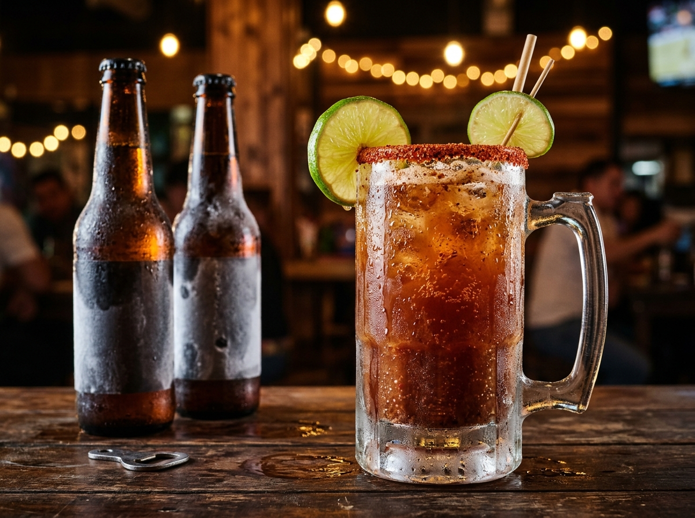
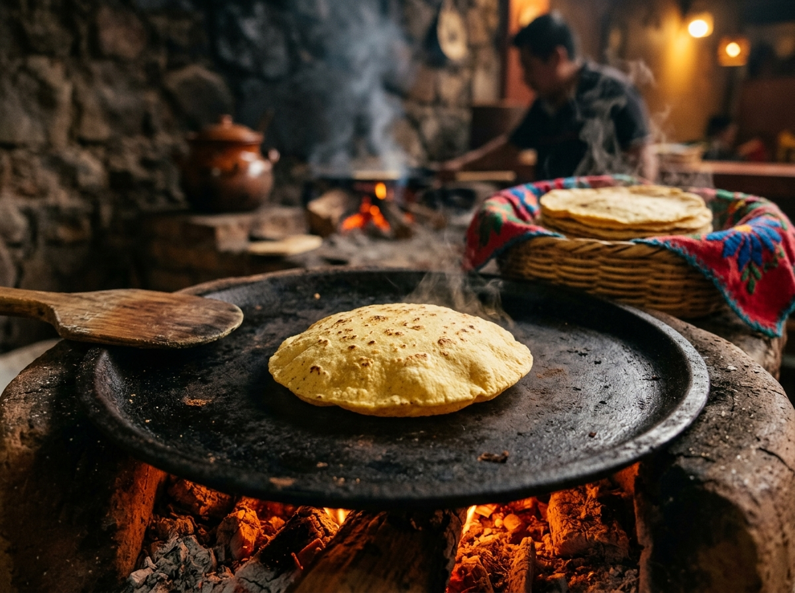
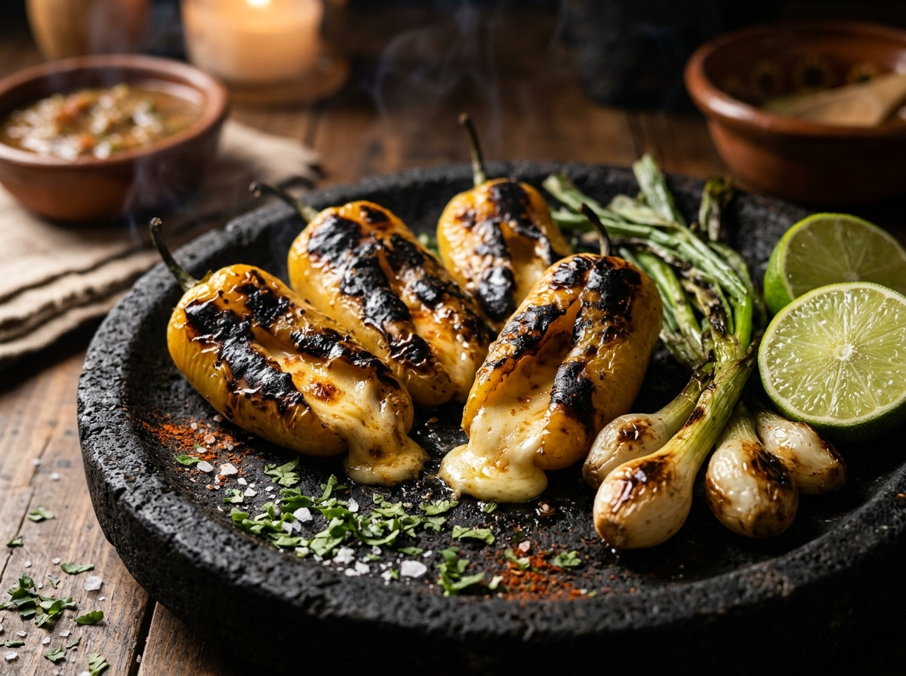
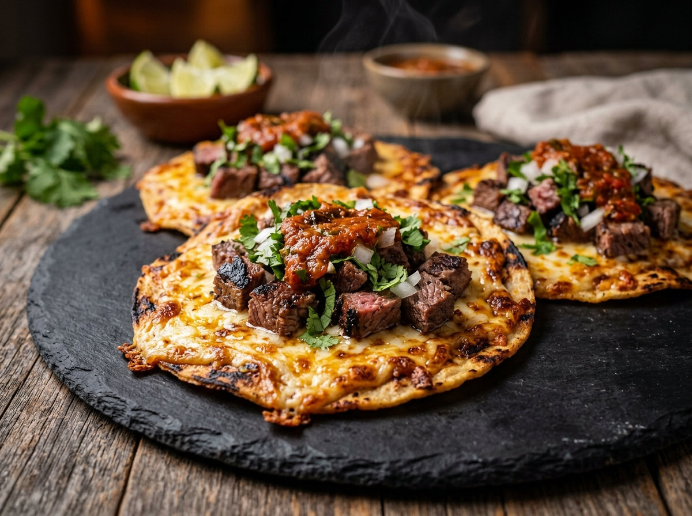

Del asador a tu mesa. Aquí un vistazo a nuestros cortes al carbón de mezquite, las tortillas hechas a mano y el ambiente de nuestras dos sucursales en Colima.
Catálogo fotográfico de platillos, brasas y sucursales de Con Branko
Taco BrankoCarne a las brasas, chile güero, queso fundido y tuétano flameadoBrasa del AsadorFuego vivo de carbón de mezquite natural

Cervezas & MicheladasMicheladas escarchadas y cerveza artesanal de ColimaMega Burro AsadorTortilla sobaquera gigante con cortes mixtos al fuego

Tortillas Hechas a ManoMaíz nixtamalizado recién salido del comal

Chiles Güeros TatemadosAsados a la brasa y rellenos de queso gratinado

Doraditas con Queso y CarneTostadas al carbón con costra de queso derretidoTerraza San FernandoAmbiente al aire libre con parrilla a la vistaBuen Ambiente en V. CarranzaNoches de asador, amigos y familia en Colima NorteArrachera Marinada al MezquiteCorte jugoso término medio con cebollitas cambray